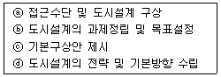
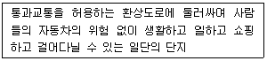
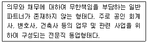
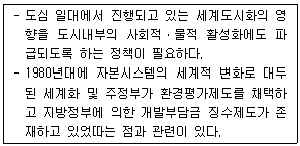
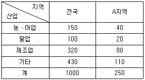
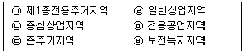

도시계획기사 (2021-09-12 기출문제)
1과목: 도시계획론
1. 도시인구의 증가 속도가 도시산업의 발달 속도보다 훨씬 커서 직장과 주택이 없는 사람들이 도시 빈민화되고 슬럼지구를 형성하는 등의 도시문제가 발생하는 현상을 무엇이라 하는가?
- 젠트리피케이션
- 역도시화
- 가도시화
- 종주도시화
(정답률: 75%)

2. U-City에 대한 설명으로 가장 적합한 것은?
- 고밀 개발을 통한 직주근접을 실현하는 도시
- 물, 에너지, 자원 등이 효율적으로 이용되고 재활용되는 오염 없는 도시
- 도시의 통행 수요 및 에너지 사용을 감소시켜 에너지를 절약하는 도시
- 다양한 정보망을 이용하는 네트워크를 형성하여 시간과 장소의 제한을 받지 않는 미래형 도시
(정답률: 79%)
3. 용도지역제인 유클리드 지역제(Euclidean zoning)에 대한 설명 중 틀린 것은?
- 과도한 민간개발을 막기 위하여 개발촉진보다는 억제에 더 관심을 두었다.
- 실제의 토지이용에 근거하여 발생하는 각종 결과를 기준하여 규제하는 성과규제지역제이다.
- 토지이용의 규제단위를 각각의 필지로 하여 이를 통해 양호한 시가지를 형성하고자 하였다.
- 상위용도(주거 등)를 하위용도(공장 등)로부터 보호하면 충분하다는 전제 하에 누적식 지역제를 채택하였다.
(정답률: 60%)
4. 성장관리란 주 및 자치체가 자신의 행정구역에 대해 장래 개발의 속도, 양, 형태, 위치, 질에 의도적인 영향을 주고자 하는 것으로 정의한 학자는?
- 고트만(J. Gotmann)
- 힐리(P. Healey)
- 갇샤크(D. Godshalk)
- 호이트(H. Hoyt)
(정답률: 68%)
5. 도시·군기본계획에서 토지이용계획을 위한 토지의 용도 구분에 해당하지 않는 것은?
- 보전용지
- 시가화용지
- 보전예정용지
- 시가화예정용지
(정답률: 66%)
6. 1970년대 중반 이후 넬슨(Arthur C. Nelson)과 듀칸(James B. Ducan)이 강조한 미국 성장관리 정책의 목적과 거리가 먼 것은?
- 효율적인 도시 형태 구축
- 경제적 형평성 재고
- 어반 스프롤의 방지
- 납세자의 보호
(정답률: 56%)
7. 도시에서 보전 가치가 높은 특정 지역에 대해 용도를 규제하는 대신 그에 상응하는 개발권을 토지소유자에게 부여하여 제한되는 권리만큼의 손실을 보상해주는 제도는?
- 개발권환수 제도
- 개발권양도 제도
- 도시재정비 제도
- 뉴타운개발 제도
(정답률: 76%)
8. 복합적 요소로 형성된 도시를 전적으로 계획가에게 맡겨두기보다 계획가와 주민들(피계획가) 간의 상호 관계를 중요시함과 동시에 인간주의적 가치에 중점을 두는 계획이론은?
- 옹호적 계획
- 교류적 계획
- 선택적 계획
- 점진적 계획
(정답률: 78%)
9. A도시는 20⑤년부터 10년 간 인구가 일정하게 증가하여 2015년 인구가 120만 명이 되었다. 20⑤년의 인구가 50만 명이었다면, A도시의 인구 증가율은 얼마인가? (단, 등차급수법에 따른다.)
- 7%
- 10%
- 14%
- 24%
(정답률: 52%)
10. 세계 최초의 환지방식에 의한 도시개발로 「토지구획정리사업에 관한 법률」을 제정하여 현대적 의미의 지역지구제를 처음으로 실시한 국가는?
- 일본
- 미국
- 독일
- 프랑스
(정답률: 54%)
11. 국토공간계획지원체계(KOrea Planning Support System. KOPSS)에 포함된 분석모형이 아닌 것은?
- 세움이(건축계획지원모형)
- 경관이(경관계획지원모형)
- 재생이(도시정비계획지원모형)
- 시설이(도시기반시설계획지원모형)
(정답률: 67%)
12. 경관요소의 구분에 따른 설명이 틀린 것은?
- 1차적 경관요소는 간접적으로 경관을 조작하여 경관 개선을 유도하는 비물리적 경관계획요소이다.
- 2차적 경관요소의 주 내용은 경관컨트롤을 위한 규제 및 인센티브요소이다.
- 3차적 경관요소는 인간의지와 관계없이 형성되는 경관으로서 비물리적, 비조작적 영역으로 볼 수 있는 상징적 경관요소이다.
- 경관계획의 궁극적 목표는 3차적 경관을 바람직하게 형성하는데 둘 수 있다.
(정답률: 62%)
13. 중세도시의 특징에 대한 설명이 틀린 것은?
- 도로망은 불규칙적이며 폭이 좁았다.
- 기능적 성격으로 구분하면 성채도시, 정기시도시, 상업도시 등으로 구분할 수 있다.
- 상업도시의 경우 경제적 부흥으로 인구가 유입되면서 인구 10만을 넘는 도시가 다수 발생하기 시작했다.
- 물리적 요소로 성벽, 시장, 사원 등이 있으며, 특히 성벽과 대사원은 중세도시의 스카이라인을 형성하는 중요한 요소였다.
(정답률: 64%)
14. 토지이용계획의 계획 과정을 상향적 접근과 하향적 접근으로 구분할 때, 이에 대한 설명이 틀린 것은?
- 기성 시가지의 유형별 대책을 수립하는 것은 상향적 접근이다.
- 도시 내 지구수준의 문제점 해결을 우선하는 것은 상향적 접근이다.
- 도시 차원에서 도시 전체의 기본 구조를 중시하는 것은 하향적 접근이다.
- 상위계획의 지침을 받아 도시의 기본계획을 설정하는 것은 상향적 접근이다.
(정답률: 70%)
15. 지리정보시스템(GIS)에 대한 설명이 틀린 것은?
- 지리·공간적 정보 및 자료를 체계적으로 저장, 검색, 변형, 분석하여 사용자에게 유용한 정보를 제공한다.
- GIS에 의한 분석은 자료의 질과 사용자의 분석 능력에 영향을 적게 받아 결과의 정확도나 가치가 보장된다.
- 자료의 수집, 예비적 처리, 자료의 관리, 자료의 변환 및 분석, 결과물 제작 등이 주요 기능이다.
- GIS를 이용하여 위치, 조건, 추세, 경로, 패턴, 오형 등을 조사·분석할 수 있다.
(정답률: 74%)
16. 단기교통계획과 비교하여 장기교통계획이 갖는 특징으로 옳은 것은?
- 환류 지향적이다.
- 시설 지향적이다.
- 다수의 서로 다른 대안을 고려한다.
- 다양한 교통수단을 동시에 고려한다.
(정답률: 52%)
17. 인구가 기하급수적인 증가를 나타내고 있어 단기간에 급속히 팽창하는 신도시의 인구 예측에 유용 하나, 안정적 인구변화추세를 나타내는 도시에 사용할 경우 인구의 과도 예측을 초래할 위험이 있는 인구예측모형은?
- 선형모형
- 지수성장모형
- 로지스틱모형
- 집단생잔모형
(정답률: 67%)
18. 일반적인 도시화의 진행 단계가 옳은 것은?
- 교외화 → 역도시화 → 도시화 → 재도시화
- 도시화 → 역도시화 → 재도시화 → 교외화
- 교외화 → 재도시화 → 도시화 → 역도시화
- 도시화 → 교외화 → 역도시화 → 재도시화
(정답률: 73%)
19. 뒤르켐(Durkheim)이 지적한 도시의 아노미 현상(Anomie)에 대한 설명으로 옳은 것은?
- 도시 인구의 증가로 인한 도시 기반시설의 부족현상이다.
- 도시의 기능분화로 인해 발생하는 도시의 물리적 문제다.
- 타인의 심리나 상황을 조작해 타인에 대한 지배력을 강화하는 행위 일체를 말한다.
- 도시화의 진행에 따라 나타나는 사회병리현상으로 흔히 대도시화로 인한 인간소외 등의 몰가치상황을 의미한다.
(정답률: 69%)
20. 고대 메소포타미아와 이집트의 도시에서 시작되었던 것을 히포다무스(Hippodamus)가 그리스의 도시계획에 적용시킨 것은?
- 성곽의 축조
- 격자형 가로망
- 공중정원의 설치
- 공공시설의 중앙배치
(정답률: 73%)
2과목: 도시설계 및 단지계획
21. 범죄에방환경설계(CPTED)와 관련성이 가장 적은 것은?
- 자연적 접근 통제
- 교통 편의성
- 영역성 강화
- 자연적 감시
(정답률: 71%)
22. 축척이 1/50000인 지형도 위에 20m 간격으로 등고선이 그려져 있고 5줄마다 계곡선이 있다. 어떤 사면의 경사를 알기 위해 측정한 계곡선 간의 수평거리가 1.2cm일 때 이 사면의 경사도는?
- 약 9%
- 약 12%
- 약 17%
- 약 20%
(정답률: 50%)
23. 도시설계 작성과정의 기본구상 흐름도에 대한 순서가 올바르게 나열된 것은?

- ⓑ→ⓓ→ⓐ→ⓒ
- ⓒ→ⓐ→ⓑ→ⓓ
- ⓐ→ⓑ→ⓓ→ⓒ
- ⓓ→ⓒ→ⓐ→ⓑ
(정답률: 64%)
24. 도시·군계획시설의 결정·구조 및 설치기준에 관한 규칙상 단지계획의 가로망을 구성할 때 주간선도로와 보조간선도로가 접속되는 교차지점의 도로 모퉁이 부분에서 보도와 차도의 경계선에 대한 곡선 반경 기준은?
- 8미터 이상
- 10미터 이상
- 12미터 이상
- 15미터 이상
(정답률: 48%)
25. 인센티브 및 패널티에 관한 설명으로 틀린 것은?
- 면적 등에 비례하여 인센티브를 산정하는 것을 정량적 인센티브라고 한다.
- 지구단위계획 지침 준수 시 일정 인센티브를 부여하는 것을 정성적 인센티브라고 한다.
- 보상적 인센티브란 지구단위계획에서 강제 규정이 아닌 권장 규정의 준수를 유도하기 위해 권장 규정 준수 시 제공하는 인센티브를 말한다.
- 지구단위계획의 목표 달성을 위해 중요한 규정을 준수하지 않을 때 부과되는 마이너스 인센티브를 패널티라고 한다.
(정답률: 54%)
26. 도시지역 외 지역에 지정하는 지구단위계획구역의 중심기능에 따른 구분에 해당하지 않는 것은?
- 주거형
- 산업유통형
- 관광휴양형
- 자연보전형
(정답률: 49%)
27. 뷰캐넌보고서(Buchanan Report)의 “통과교통으로부터 생활환경 보호”의 개념과 관련하여 아래 내용에 해당하는 것은?

- 슈퍼블록
- 획지분할
- 보행자데크
- 거주환경지역
(정답률: 46%)
28. 주택건설기준 등에 관한 규정상 2000세대 이상의 공동주택을 건설하는 주택단지는 기간도로와 접하거나 기간도로로부터 당해 단지에 이르는 진입도로의 폭을 최소 얼마 이상으로 하여야 하는가?
- 8m 이상
- 12m 이상
- 15m 이상
- 20m 이상
(정답률: 56%)
29. 일반적으로 도시 공간에서 건물의 높이와 수평거리의 비율이 얼마일 때부터 폐쇄감을 느끼기 시작하는가?
- 4:1
- 2:1
- 1:2
- 1:4
(정답률: 56%)
30. 지구단위계획에서의 공동개발 및 합벽건축에 대한 설명으로 틀린 것은?
- 미관개선만을 목적으로 하는 공동개발 또는 합벽건축의 지정은 피한다.
- 교통 혼잡을 유발하는 대규모 시설이 입지하지 못하도록 필요한 경우에는 대지규모의 상한 기준을 설정하여 적정규모의 공동개발이 되도록 유도한다.
- 대지의 규모와 형상, 주변 상황 등을 고려하여 공동개발을 권장하거나 억제하는 등 다양한 수법을 제시할 수 있다.
- 공동개발의 계획수립에서는 주민의 의견은 반영하지 않고, 전문가의 미래 예측 능력과 주관적인 판단에 따르는 것이 가장 중요하다.
(정답률: 68%)
31. 밀톤케인즈(Milton Keynes) 신도시 계획의 주요 내용으로 옳지 않은 것은?
- 지구 전체를 순환하는 보행자전용도로인 레드 웨이(RED WAY)를 계획하였다.
- 주요 간선도로는 격자형으로 이루어져 있다.
- 커뮤니티센터는 모든 주택으로부터 500m를 넘지 않도록 계획되어 있다.
- 초기의 뉴타운에서와 같이 내부로 향하는 내향적 근린주구로서 계획되었다.
(정답률: 59%)
32. 일반적인 단지계획 수립 과정의 순서가 바르게 나열된 것은?
- 조사분석→기본구상·대안설정→기본계획·기본설계→목표설정→실시설계·집행계획
- 목표설정→기본계획·기본설계→실시설계·집행계획→조사분석→기본구상·대안설정
- 기본구상·대안설정→기본계획·기본설계→조사분석→목표설정→실시설계·집행계획
- 목표설정→조사분석→기본구상·대안설정→기본계획·기본설계→실시설계·집행계획
(정답률: 66%)
33. 공업지역의 입지 조건으로 적합하지 않은 것은?
- 교통, 용수, 노동력의 편의를 얻을 수 있는 지역
- 평탄하고 지가가 저렴하며 넓은 지역
- 쓰레기 처리가 용이한 지역
- 근린주구와 연속된 지역
(정답률: 74%)
34. 주거환경을 구성하는 요소를 물리적 요소, 사회적 요소, 생태적 요소로 구분할 때, 생태적 요소에 포함되지 않는 것은?
- 소음
- 배수
- 지세
- 이미지
(정답률: 70%)
35. 공동주택을 건설하는 지점의 소음도가 최소 얼마 이상인 경우에 방음벽·방음림 등의 방음시설을 설치하여야 하는가?
- 45데시벨
- 55데시벨
- 65데시벨
- 75데시벨
(정답률: 72%)
36. 오픈스페이스의 기능에 대한 설명으로 거리가 가장 먼 것은?
- 시냇물·연못·동산 등과 같은 자연 경관적 요소들을 제공한다.
- 기존의 자연환경을 보전·향상시켜 줄 수 있는 수단을 제공한다.
- 공기정화를 위한 순환통로의 기능을 수행함으로써 미기후의 형성에 영향을 준다.
- 오픈스페이스의 적극적 확보를 위하여 평탄한 곳과 차량 접근성이 뛰어난 곳을 우선 확보하여 제공하여야 한다.
(정답률: 67%)
37. 도시설계 관련 제도가 도입되었던 당시의 법적 근거가 잘못 연결된 것은?
- 지구단위계획제도 : 국토의 계획 및 이용에 관한 법률
- 도시설계 지구지정제도 : 도시계획법
- 상세계획제도 : 도시계획법
- 미관지구제도 : 건축법
(정답률: 58%)
38. 각종 국지도로 형태의 장·단점에 대한 설명이 틀린 것은?
- 쿨데삭(Cul-de-sac)형은 통과교통을 방지함으로써 주거환경의 쾌적성과 안전성이 모두 확보된다.
- 격자형은 가로망의 형태가 단순·명료하고, 계획적으로 조성되는 시가지에 가장 많이 이용된다.
- T자형은 쿨데삭형의 문제점을 개선한 형태로, 택지의 이용효율이 떨어지지만, 보행자는 편리하게 이용할 수 있다.
- 루프(Loop)형은 불필요한 차량 진입이 배제되는 효과가 있다.
(정답률: 70%)
39. 도시공원 및 녹지 등에 관한 법률에 근거하여 대기오염, 소음, 진동, 악취, 그 밖에 이에 준하는 공해와 각종 사고나 자연재해, 그 밖에 이에 준하는 재해 등의 방지를 위하여 설치·관리하는 녹지는?
- 완충녹지
- 결관녹지
- 연결녹지
- 조절녹지
(정답률: 77%)
40. 계획 인구 5만명, 주택용지율 75%의 단지계획에서 1인당 택지 점유율이 30m2일 때, 계획대상 단지의 면적은 얼마인가?
- 11.25ha
- 66.66ha
- 150ha
- 200ha
(정답률: 42%)
3과목: 도시개발론
41. 도시 및 주거환경정비법령상 정비사업의 구분에 해당하지 않는 것은?
- 재개발사업
- 재건축사업
- 주거환경개선사업
- 도시재생사업
(정답률: 65%)
42. 도시개발법상 도시개발구역의 전부를 환지 방식으로 시행하는 경우 원칙적으로 시행자로 지정될 수 있는 자는? (단, 기타의 경우는 고려하지 않는다.)
- 한국관광공사
- 국가나 지방자치단체
- 「지방공기업법」에 따라 설립된 지방공사
- 도시개발구역의 토지소유자가 설립한 조합
(정답률: 59%)
43. 단일 또는 소수의 프로젝트를 신디케이트하는 경우 또는 부동산 사업에 자본을 모집하기 위한 수단인 파트너십의 형태 중, 아래의 설명에 해당하는 것은?

- 일반 파트너십(General Partnership)
- 유한 파트너십(Limited Partnership)
- 무한 파트너십(Unlimited Partnership)
- 유한책임 파트너십(Limited Liability Partnership)
(정답률: 59%)
44. 근대도시운동에서 1938년 근대건축국제회의(CIAM)에 관한 설명으로 거리가 가장 먼 것은?
- 공업기술이 가져온 무한히 크고 새로운 자원과 방법을 활용해야 한다고 주장하였다.
- 도시의 시간적 변화와 성장에 맞춰 단기적이고 즉각적인 전환과 변신에 대응하고자 하였다.
- 기능주의를 부각시켜 지역지구제, 보차분리 등의 계획개념을 도입하였다.
- CIAM의 정신에 의해 세워진 대표적인 도시로 샹디가르와 브라질리아가 있다.
(정답률: 59%)
45. 시계열 분석 기법에 대한 설명이 틀린 것은?
- 이동평균법은 규모가 작은 신제품의 시장예측에 주로 활용되며, 결과 해석이 용이하다.
- 과거에 발생했던 일이 미래에도 관련성 있게 나타날 것이라는 전제를 바탕으로 한다.
- 시계열분석은 시간과 설명 변수 사이에 다중공선성이 나타날 위험이 없어, 개발수요 분석 시 용이하다.
- 시계열 분석을 위해서는 과거시계열 자료가 반드시 필요하다.
(정답률: 48%)
46. 도시 및 주거환경정비법령에 따라 기본계획의 수립권자가 기본계획을 수립하려는 경우 주민에게 공람하여 의견을 들어야 하는 기간의 기준은?
- 14일 이상
- 14일 미만
- 7일 이상
- 7일 미만
(정답률: 65%)
47. 마케팅전략의 세 가지 단계로 구성된 STP 전략 중 새로운 제품에 대해 다양한 욕구, 행동, 특성을 가진 소비자들을 동질적인 집단으로 나누는 것은?
- 시장 세분화
- 표적시장 선정
- 전략적 판촉
- 제품 포지셔닝
(정답률: 63%)
48. 다음 중 시행방식에 따른 재개발사업의 분류에 해당하지 않는 것은?
- 전면재개발(redevelopment)
- 환류재개발(regeneration)
- 수복재개발(rehabilitation)
- 보전재개발(conservation)
(정답률: 55%)
49. 다음 중 주민참여형 도시개발의 유형이 아닌 것은?
- 주민발의
- 개발협정
- 주민투표
- 공공협약
(정답률: 56%)
50. 다음 중 개발행위허가를 받지 않아도 되는 경미한 행위 기준이 틀린 것은?
- 높이 100센티미터 이내의 질토
- 농림지역 안에서의 농림어업을 비닐하우스의 설치(비닐하우스 안에 설치하는 육상어류양식장 제외)
- 도시지역에서 채취면적이 25m2 이하인 토지에서의 부피 50m2이하의 토석 채취
- 조성이 완료된 기존 대지에 건축물이나 그 밖의 공작물을 설치하기 위한 토지의 형질변경(절토 및 성토 제외)
(정답률: 40%)
51. 아래와 같은 등장배경을 갖는 도시개발 관련 기법(정책)은?

- 확지분활(Subdivision)
- 연계정책(linkage policy)
- 기반도시개발(Infra-city development)
- 개발권양도(transfer of development rights)
(정답률: 55%)
52. 다음의 수요추정방법 중 정량적인 예측모형이 아닌 것은?
- 회귀분석법
- Huff 모형
- 시나리오법
- 중력모형
(정답률: 56%)
53. 복합용도개발(MXD)의 사회적ㆍ경제적 효과로 거리가 가장 먼 것은?
- 도시개발 리스크의 감소
- 도시의 외연적 확산 완화
- 직주근접에 따른 통행거리 감소
- 수직 통행의 감소를 통한 교통 혼잡 완화
(정답률: 57%)
54. 특정 도시개발사업에 대해 초기연도에 700억 원을 투자하여, 사업 운영기간(3년) 동안 매년 말 300억 원의 수익이 기대될 경우, 이 사업의 순현재가치(NPV)는 약 얼마인가? (단, 할인율은 10%이다.)
- 19억원
- 46억원
- 121억원
- 3⑤억원
(정답률: 46%)
55. 사업성 평기지표에 대한 설명이 옳은 것은?
- 일반적으로 수익성 지수, 순현재가치(NPV), 내부수익률(IRR)과 같은 지표를 사용한다.
- 순현재가치가 0보다 클 때 프로젝트의 사업성을 판단할 수 있다.
- 내부수익률이 자본비용보다 작을 때 사업성이 없는 것으로 평가된다.
- 수익성 지수가 1보다 적을 때 사업성이 있는 것으로 평가된다.
(정답률: 50%)
56. 도시개발법령에 따른 환지방식에 대한 설명이 틀린 것은?
- 시행자는 도시개발사업의 전부 또는 일부를 환지 방식으로 시행하려면 환지 설계를 포함한 환지 계획을 작성하여야 한다.
- 시행자는 일정한 토지를 환지로 정하지 아니하고 표류지로 정하여, 그 중 일부를 체비지로 정할 수 있으나 도시개발사업에 필요한 경비로는 충당할 수 없다.
- 시행자는 토지 면적의 규모를 조정할 특별한 필요가 있으면 면적이 작은 토지는 과소 토지가 되지 아니하도록 면적을 늘려 환지를 정하거나 환지 대상에서 제외할 수 있다.
- 환지 계획은 종전의 토지와 환지의 위치ㆍ지목ㆍ토질ㆍ수리ㆍ이용 상황ㆍ환경, 그 밖의 사항을 종합적으로 고려하여 합리적으로 정하여야 한다.
(정답률: 65%)
57. 도시개발사업을 위한 재원조달방안인 지분조달방식에 대한 설명으로 틀린 것은?
- 원리금이나 이자의 상환부담이 없다.
- 중소기업의 경우 주식 공개매매, 유통시장이 발달되지 않는다.
- 자본시장의 여건에 따라 조달이 민감하게 영향을 받는다.
- 조달규모가 증대되면 소유자의 지분이 크게 확대되어 회사 통제권을 갖게 된다.
(정답률: 50%)
58. 부동산투자의 유형을 운용시장의 형태에 따라 구분할 때, 다음 중 민간시장(private market) 부문에 해당하지 않는 것은?
- 직접투자
- 사모부동산 펀드
- 상업용저당채권
- 직접대출(loans)
(정답률: 63%)
59. 프로젝트 금융(Project Financing)에 대한 설명으로 틀린 것은?
- 금융기관이 부담하는 각종 위험이 통상적인 기업금융에 비해 적은 편이다.
- 다양한 이해관계자들의 협상에 의해 이루어지기 때문에 복잡한 금융절차를 가진다.
- 사업 추진 과정 상의 제약 요인들에 대해 다양하고 유연한 사업 기법을 적용하여 사업성과 생산성을 높일 수 있다.
- 별도의 프로젝트회사를 설립하여 사업을 수행하므로 비소구금융 및 부외금융의 효과를 얻을 수 있다.
(정답률: 58%)
60. 상업적 또는 공공적인 목적을 위해 지상 공간의 하부에 자연적으로 형성되어 있던 공간의 개발이나 인위적인 굴착을 통해 생성한 공간을 무엇이라 하는가?
- 지하공간
- 녹지
- 오픈스페이스
- 주차장
(정답률: 70%)
4과목: 국토 및 지역계획
61. 국토기본법상 중앙행정기관의 장 또는 지방자치단체의 장이 지역 특성에 맞는 정비나 개발을 위하여 필요하다고 인정하여 수립하는 지역계획의 구분 중, 성장 잠재력을 보유한 낙후지역 또는 거점지역 등과 그 인근지역을 종합적ㆍ체계적으로 발전시키기 위하여 수립하는 것은?
- 지역개발계획
- 수도권발전계획
- 광역권개발계획
- 획지계획
(정답률: 69%)
62. 안스타인(S. Arnstein)이 주장한 주민참여 8단계 중, 주민권리로서의 참여 단계에 해당하지 않는 것은?
- 상담(consultation)
- 협동관계(partnership)
- 주민통제(citizen control)
- 권한위임(delegated power)
(정답률: 52%)
63. 전국 및 A지역의 산업별 종사자수가 아래와 같을 때, A지역 제조업의 입지상(location quotient)계수는? (단, 종사자수의 단위는 천명이다.)

- 0.25
- 0.32
- 0.50
- 1.00
(정답률: 51%)
64. 제4차 국토종합계획 수정계획(2011~2020)의 기본목표에 해당하지 않는 것은?
- 품격있는 매력 국토
- 경쟁력 있는 통합 국토
- 지속가능한 친환경 국토
- 안전하고 지속가능한 스마트국토
(정답률: 51%)
65. 교통수요 및 수요 예측을 위한 4단계 추정법에 관한 설명으로 틀린 것은?
- 교통량의 발생은 대상 도시의 활동량에 따라 변한다.
- 교통량의 분배(trip distribution)는 통행 유출량과 통행 유입량을 연결시키는 단계이다.
- 중력모형은 교통수단의 선택(modal split)단계에서 가장 많이 사용되는 모형이다.
- 교통수단의 선택(modal split)은 통행자, 통행목적, 사용가능한 교통 수단의 존재 여부에 따라 결정된다.
(정답률: 53%)
66. 국가발전의 목표를 경제적 효율성보다 사회 내 모든 집단과 개인 생활의 질적 향상에 치중하는 개발전략에 해당하는 이론은?
- 기초수요이론
- 성장거점이론
- 중속이론
- 불균형개발이론
(정답률: 67%)
67. 우리나라의 제1차 국토종합개발계획에서 구분한 4대강 유역권에 해당하지 않는 것은?
- 한강유역권
- 금강유역권
- 섬진강유역권
- 영산강유역권
(정답률: 47%)
68. 지역산업연관분석(input-output analysis)모형의 가정과 가장 거리가 먼 것은?
- 외부경제와 비경제는 없다.
- 모든 산업은 하나의 선형적ㆍ동질적 생산함수를 갖는다.
- 측정 기간 동안 교역계수는 동일하다.
- 각 산업의 생산물은 결합생산물로 추계한다.
(정답률: 31%)
69. 도시지역의 주거입지를 설명하는 상쇄모형(Residential trade-off model)의 주택가격 함수에서 상쇄의 대상이 되는 것은?
- 소득과 소비
- 주거비용과 통근비용
- 주택규모와 주택의 질적 수준
- 자가용유지비와 대중교통비용
(정답률: 55%)
70. 결절지역(nodal 또는 polarized regions)에 대한 설명으로 틀린 것은?
- 지역경제 내지 지역정책의 목적 달성을 위해 행정조직에 근거하여 인위적으로 설정한 영역이다.
- 미국의 표준 대도시 통계지역(SMSA), 일본의 인구집중지구(DID)를 예로 들 수 있다.
- 결절지역을 분석하는 데 중력모형이 유용하게 이용될 수 있다.
- 기능적 측면에서 공간의 상호 의존성을 고려하여 분류한 지역개념이다.
(정답률: 42%)
71. 다음 중 알론소의 입찰지대이론과 가장 거리가 먼 개념은?
- 무차별곡선(Indifference Curve)
- 단일도심(Monocentric City)
- 입찰지대(Bid Rent)
- 필터링(Filtering)
(정답률: 49%)
72. 도시체계에서 한 도시의 규모는 그 도시의 등급에 반비례한다는 관계를 설명하는 이론은?
- 순위-규모 법칙(Rank-size Rule)
- 균형화이론(Equalization Theories)
- 표준화기법(Standardization Technique)
- 연쇄체계모형(Recursive System Model)
(정답률: 68%)
73. 수도권정비계획법령에 따른 권역 구분에 해당하지 않는 것은?
- 과밀억제권역
- 성장관리권역
- 자연보전권역
- 개발제한권역
(정답률: 60%)
74. 선도 또는 추진산업(leading or propulsive industry)의 일반적인 특징으로 틀린 것은?
- 다른 산업과의 연계성이 낮은 산업이다.
- 전체 산업의 평균 성장률보다 빠른 성장률을 가진다.
- 성장을 유도하고 그 성장을 다른 곳으로 확산시킨다.
- 진보된 수준의 기술을 요구하는 새롭고 역동적인 산업이다.
(정답률: 67%)
75. 인구예측모형을 요소모형과 비요소모형으로 구분할 때, 다음 중 요소모형에 해당하는 것은?
- 곰페르츠모형
- 로지스틱모형
- 인구이동모형
- 지수성장보형
(정답률: 62%)
76. 다음 중 동질적인 집단을 규명하기 위한 분석에서 가장 유용한 통계적 기법은?
- 로짓모형(Logit Model)
- 군집분석(Cluster Analysis)
- 회귀분석(Regression Analysis)
- 분산분석(Analysis of Variance)
(정답률: 72%)
77. 도시와 농촌의 구분이 불분명해지고 도시계획과 농촌계획의 통합적 접근이 필요하게 됨에 따라 1932년 도시계획법을 「도시 및 농촌계획법」으로 개정한 나라는?
- 영국
- 미국
- 독일
- 프랑스
(정답률: 63%)
78. 지역개발이론의 주창자와 대표 이론의 연결이 옳은 것은?
- 페로우(Perroux) - 수출기반이론
- 로스토우(Rostow) - 단계적성장이론
- 미르달(Myrdal) - 쇄신이론
- 노스(North) - 지역간균형성장이론
(정답률: 28%)
79. 우리나라의 국토 및 지역계획 수립과정에서의 공간적 제약요소로 가장 거리가 먼 것은?
- 협소한 국토
- 국토의 분단
- 산업의 분산
- 지역 간 불균형 성장
(정답률: 57%)
80. 지역계획의 학문적 성격으로 가장 거리가 먼 것은?
- 종합 과학적인 학문이다.
- 순수이론만을 다루는 학문이다.
- 규범적이고 실천적인 학문이다.
- 공간의 문제에 바탕을 둔 학문이다.
(정답률: 60%)
5과목: 도시계획관계법규
81. 국토의 계획 및 이용에 관한 법령에 따라 해당 용도지역별 용적률의 최대한도가 가장 낮은 것부터 순서대로 옳게 나열한 것은? (단, 조례로 따로 정하는 경우는 고려하지 않는다.)

- ㉥,㉠,㉢,㉤,㉣,㉡
- ㉥,㉠,㉢,㉣,㉤,㉡
- ㉥,㉠,㉤,㉢,㉡,㉣
- ㉥,㉠,㉤,㉢,㉣,㉡
(정답률: 50%)
82. 국토의 계획 및 이용에 관한 법령상 기반시설 중 공공ㆍ문화체육시설에 해당하지 않는 것은?
- 시장
- 학교
- 사회복지시설
- 청소년수련시설
(정답률: 65%)
83. 주택법령상 주택건설사업은 시행하려는 자가 사업계획 승인권자에게 사업계획승인을 받아야 하는 주택건설사업의 규모 기준으로 옳은 것은? (단, 단독주택으로서, 건축법 시행령에 따른 한옥을 건설하는 경우)
- 10호 이상
- 20호 이상
- 30호 이상
- 50호 이상
(정답률: 36%)
84. 도시 및 주거환경정비법령의 정의에 따라 “노후ㆍ불량 건축물”에 해당하는 설명이 아닌 것은?
- 건축물이 훼손되거나 일부가 멸실되어 붕괴, 그 밖의 안전사고의 우려가 있는 건축물
- 내진성능이 확보되지 아니한 건축물 중 중대한 기능적 결함이 있는 건축물로서 대통령령으로 정하는 건축물
- 건축물을 철거하고 새로운 건축물을 건설하는 경우 건설에 드는 비용과 효용의 차이가 없을 것으로 예상되는 건축물로서 시ㆍ도 조례로 정하는 건축물
- 도시미관을 저해하거나 노후화된 건축물로서 대통령령으로 정하는 바에 따라 시ㆍ도 조례로 정하는 건축물
(정답률: 62%)
85. 수도권정비계획법령상 총량규제에 관한 설명 중 틀린 것은?
- 국토교통부장관은 인구집중유발시설이 수도권에 지나치게 집중되지 아니하도록 하기 위하여 일정한 기준을 초과하는 신설 또는 증설을 제한할 수 있다.
- 국토교통부장관이 인구집중유발시설의 신설 또는 증설을 제한하는 경우, 신설 또는 증설의 총허용량과 그 산출 근거는 국토교통부장관이 고시한다.
- 공장에 대한 총량규제의 내용과 방법은 수도권정비위원회의 심의를 거쳐 결정하며, 관할 시ㆍ도지사는 이를 고시하여야 한다.
- 관계 행정기관의 장은 인구집중유발시설의 신설 또는 증설에 대하여 관련 규정에 따른 총량규제의 내용과 다르게 허가 등을 하여서는 아니 된다.
(정답률: 50%)
86. 도시공원 및 녹지 등에 관한 법령상 하나의 도시지역 안에 있어서의 도시공원의 확보기준은? (단, 개발제한구역 및 녹지지역을 제외한 도시지역 안의 경우는 고려하지 않는다.)
- 해당 도시지역 안에 거주하는 주민 1인당 3m2 이상
- 해당 도시지역 안에 거주하는 주민 1인당 4m2 이상
- 해당 도시지역 안에 거주하는 주민 1인당 5m2 이상
- 해당 도시지역 안에 거주하는 주민 1인당 6m2 이상
(정답률: 57%)
87. 주택법령상 주택건설사업을 시행하려는 자가 대통령령으로 정하는 호수 이상의 주택단지를 공구별로 분할하여 주택을 건설ㆍ공급하고자 할 때, 사업계획승인을 받기 위해 사업계획 승인권자에게 첨부하여 제출하여야 할 서류에 해당하지 않는 것은?
- 사용검사계획서
- 주택관리계획서
- 입주자모집계획서
- 공구별 공사계획서
(정답률: 35%)
88. 건축법상 건축물의 대지는 최소 얼마 이상이 도로에 접하여야 하는가? (단, 자동차만의 통행에 사용되는 도로는 제외한다.)
- 2m
- 4m
- 5m
- 6m
(정답률: 63%)
89. 도시공원 및 녹지 등에 관한 법령상 도시공원의 세분에 해당하지 않는 것은? (단, 조례로 정하는 경우는 고려하지 않는다.)
- 근린공원
- 묘지공원
- 체육공원
- 국립공원
(정답률: 57%)
90. 주차장법령상 단지조성사업 등으로 설치되는 노외주차장에 경형자동차를 위한 전용주차구획과 환경친화적 자동차를 위한 전용주차구획을 합한 주차구획의 설치 기준으로 옳은 것은?
- 노외주차장 총 주차대수의 1% 이상
- 노외주차장 총 주차대수의 3% 이상
- 노외주차장 총 주차대수의 5% 이상
- 노외주차장 총 주차대수의 10% 이상
(정답률: 56%)
91. 국토의 계획 및 이용에 관한 법령에 따라, 건축물을 건축하고자 하는 자가 그 대지의 일부를 공공시설부지로 제공하는 경우 당해 건축물에 대한 규정 용적률의 200% 이하의 범위 안에서 대지면적의 제공비율에 따라 용적률을 따로 정할 수 있는 지역ㆍ지구 또는 구역에 해당하지 않는 것은?
- 상업지역
- 개발진흥지구
- 도시 및 주거환경정비법에 따른 재건축사업을 시행하기 위한 정비구역
- 도시 및 주거환경정비법에 따른 재개발사업을 시행하기 위한 정비구역
(정답률: 39%)
92. 국토기본법상 국토정책위원회에 관한 설명으로 옳은 것은?
- 위원장은 국토교통부장관이 한다.
- 위촉위원은 국무조정실장이 임명한다.
- 당연직위원은 국토계획 및 정책에 관하여 학식과 경험이 풍부한 사람으로서 국무총리가 위촉한 사람으로 한다.
- 위촉위원회 임기는 2년으로 하되, 사임 등으로 인하여 새로 위촉된 위원회 임기는 전임위원 임기의 남은 기간으로 한다.
(정답률: 59%)
93. 도시재생 활성화 및 지원에 관한 특별법령상 도시재생지원센터의 수행 업무가 아닌 것은?
- 국가지원 사항이 포함된 도시재생사업에 대한 심의
- 도시재생전략계획의 수립과 관련 사업의 추진 지원
- 도시재생활성화지역 주민의 의견조정을 위하여 필요한 사항
- 현장 전문가 육성을 위한 교육프로그램의 운영
(정답률: 51%)
94. 도시 및 주거환경정비법령상 정비계획의 변경 시 주민에 대한 서면통보, 주민설명회, 주민공람 및 지방의회의 의견청취 절차를 거치지 아니할 수 있는 경우 기준이 아닌 것은? (단, 기타의 경우는 고려하지 않는다.)
- 정비구역의 면적을 10퍼센트 미만의 범위에서 변경하는 경우
- 공동이용시설 설치계획을 변경하는 경우
- 건축물의 건폐율을 축소하는 경우
- 정비사업시행 예정시기를 5년의 범위에서 조정하는 경우
(정답률: 33%)
95. 도시개발법상 시행자가 도시개발사업을 원활히 시행하기 위하여 특히 필요한 경우에 토지 또는 건축물 소유자의 신청을 받아 건축물의 일부와 그 건축물이 있는 토지의 공유지분을 부여하는 것을 무엇이라 하는가?
- 보류지
- 체비지
- 증감환지
- 입체환지
(정답률: 57%)
96. 국토교통부장관이 산업단지 외의 지역에서의 공장설립을 위한 입지 지정과 지정 승인된 입지의 개발에 관한 기준 작성 시 포함되어야 할 사항에 해당하지 않는 것은? (단, 기타 다른 계획과의 조화를 위하여 필요한 사항은 고려하지 않는다.)
- 주택건설 및 공급에 관한 사항
- 토지가격의 안정을 위하여 필요한 사항
- 산업시설용지의 적정이용기준에 관한 사항
- 환경보전 및 문화재 보존을 위하여 필요한 사항
(정답률: 48%)
97. 건축법령상 각 시설군에 속하는 건축물의 용도가 잘못 연결된 것은?
- 전기통신시설군 - 발전시설
- 문화집회시설군 - 운동시설
- 영업시설군 - 숙박시설
- 주거업무시설군 – 단독주택
(정답률: 55%)
98. 수도권정비계획법령상 과밀부담금의 산정 및 배분 기준에 관한 내용 중 틀린 것은?
- 건축비의 100분의 10으로 한다.
- 지역별 여건을 감안하여 100분의 5까지 정할 수 있다.
- 건축비는 시장이 고시하는 표준건축비를 기준으로 산정한다.
- 징수된 부담금의 100분의 50은 부담금을 징수한 건축물이 있는 시ㆍ도에 귀속한다.
(정답률: 54%)
99. 도시ㆍ군계획시설의 결정ㆍ구조 및 설치기준에 관한 규칙에 따른 광장의 세분에 해당하지 않는 것은?
- 교통광장
- 건축물부설광장
- 미관광장
- 지하광장
(정답률: 54%)
100. 수도권정비계획법령상 대규모 개발사업의 정의에 해당하지 않는 택지조성사업은? (단, 면적이 모두 100만m2이상인 경우)
- 「주택법」에 따른 주택건설사업
- 「택지개발촉진법」에 따른 택지개발사업
- 「도시 및 주거환경정비법」에 따른 주거환경개선사업
- 「산업입지 및 개발에 관한 법률」에 따른 산업단지 및 특수지역에서의 주택지 조성사업
(정답률: 37%)